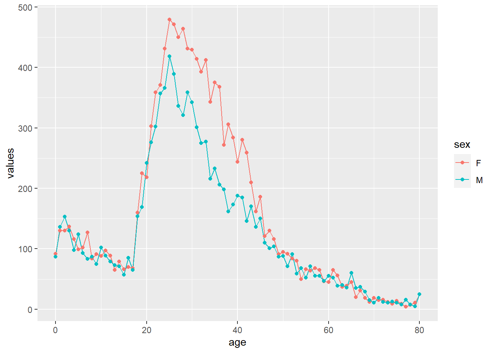

Chapter 5 Migration Age Schedules
Age plays a crucial role in shaping migration patterns and rates, and it is a significant source of heterogeneity in migration behavior. Migration rates can differ substantially across different age groups. Young adults often exhibit higher migration rates compared to other age cohorts. This is commonly observed due to factors such as educational pursuits and employment opportunities. Some older adults may migrate for retirement purposes, seeking locations with favorable climates, amenities, or healthcare facilities. Others may migrate to be closer to family members or to access specific social support networks. Furthermore, age can interact with other demographic characteristics, such as marital status or family composition, to influence migration decisions. For example, young adults who are married or have children may consider different factors when deciding to migrate compared to single individuals or couples without children.
5.0.1 Rogers Castro migration age schedules
As with other demographic events such as fertility and mortality, migration exhibit consistent patterns in their age-specific rates. Demographers have dedicated efforts to capturing and summarizing these regularities in rates using mathematical expressions known as model schedules. These model schedules aim to provide a concise representation of the age-specific migration rates based on empirical data.
Model migration age schedules are used for several purposes in demographic analysis and population studies. They commonly provide a basis for projecting and forecasting future migration patterns in cohort component population projection models. This can be to smooth age-specific migration baseline data which might be unreliable. When no age-specific migration data is available, model migration age schedules can be used to derive age-specific migration patterns required for cohort component population projection models. Fitted parameters in model migration age schedules can also be used to analyze and compare the age-specific migration patterns in different populations, identifying similarities and differences.
(Rogers1981?) were the first to identify and mathematically summarise the consistency in migraiton age patterns after a comprehensive analysis of more than 500 age profiles of migration. Rogers-Castro migration age schedule are composed of intersecting mathematical curves representing migration patterns across different life stages. The curves in different parts of the schedule aims to capture the age-specific migration rates within specific segments of the population. The schedules are divided into five main components:
Pre-labor force: This curve represents migration patterns among individuals who have not yet entered the labor force, such as children, students or young individuals who have not yet started working. Higher migration rates tend to found in very young adolescents who move with their parents.
Labor force: This curve focuses on migration patterns among individuals who are actively engaged in the labor force. It captures migration behavior among working-age individuals, reflecting factors such as job opportunities, economic conditions, and career advancements which tend to peak in early adulthood and then gradually decline until retiremnet.
Post-labor force: This curve accounts for migration patterns among individuals who have exited the labor force, such as retirees. Upon exiting the labour force, indivudals might migrate as they no longer need to be located near their working location.
Post-retirement: This component specifically addresses migration patterns among individuals who are towards the later stages of their life course and might migrate for better access to healthcare and proximity to family or social networks for later life care.
Constant term: This term represents a constant or baseline level of migration that is independent of age.
Each of these componets can be represented mathematically using algebraic expression for cureves describing the changes in migration rates \(m\) for each age group \(x\) and combined as:
\[ \begin{aligned} m(x) =& a_1 \exp(-\alpha_1 x) \\ &+a_2 \exp(-\alpha_2(x - \mu_2) - \exp(\lambda_2(x - \mu_2))) \\ &+a_3 \exp(-\alpha_3(x - \mu_3) - \exp(\lambda_3(x - \mu_3))) \\ &+a_4 \exp(\lambda_4x)\\ &+ c \end{aligned} \]
By combining the components, the Rogers-Castro migration age schedules provide a framework for describing age-specific migration patterns across different life stages. In many locations and time periods, not all of the components of the full migration age schedule are relevant.
Almost all migration age patterns exhibit certain a downward slope during the pre-labor force years and a peak during the labor force period. To capture these patterns, only a 7-parameter model schedule, without the additional algebraic expressions for the post-labour and post-retirement components (based on the \(a3, a4, \alpha_3, \mu_3, \lambda_3 and \lambda_4\)$) are used.
In specific areas, particularly in more elderly Western countries, migration age patterns may exhibit the additional retirement peak components, which leads to an 11-parameter model schedule that includes the pre-labor force and labor force components. In contrast, in some regions, instead of a retirement peak, age profiles exhibit an upward slope towards the end of life, which leads to a 9-parameter model schedule. In rare cases, there are instances where both a retirement peak and a post-retirement upward slope are observed in migration age patterns, captured by the full 13-parameter model schedule, proposed by (Rogers1987a?). Further refinements to the migration model age schedules have since been proposed, including by (Wilson2010?), who introduced a 17-parameter model that incorporates a student peak before the labor force peak. This addition acknowledges the migration patterns observed among students, who may migrate for educational purposes before entering the labor force.
The mig_calculate_rc() function in the rcbayes package by (Alexander2021?) provide a quick method to calculate migration age schedules for a given parameter set
library(tidyverse)## ── Attaching core tidyverse packages ──────────────────────── tidyverse 2.0.0 ──
## ✔ dplyr 1.1.0 ✔ readr 2.1.4
## ✔ forcats 1.0.0 ✔ stringr 1.5.0
## ✔ ggplot2 3.4.1 ✔ tibble 3.2.0
## ✔ lubridate 1.9.2 ✔ tidyr 1.3.0
## ✔ purrr 1.0.1
## ── Conflicts ────────────────────────────────────────── tidyverse_conflicts() ──
## ✖ dplyr::filter() masks stats::filter()
## ✖ dplyr::lag() masks stats::lag()
## ℹ Use the ]8;;http://conflicted.r-lib.org/conflicted package]8;; to force all conflicts to become errorslibrary(rcbayes)
# define 7 parameters
p <- c(a1 = 0.1, alpha1 = 0.1,
a2 = 0.2, alpha2 = 0.1, mu2 = 20, lambda2 = 0.5,
c = 0.01)
# calculate model migration schedule with 11 parameters
mx <- mig_calculate_rc(ages = 1:100, pars = p)
# first 10 mx
mx[1:10]## [1] 0.10048374 0.09187308 0.08408182 0.07703200 0.07065307 0.06488116
## [7] 0.05965853 0.05493290 0.05065697 0.04678794# plot the calculated mx
tibble(x = 1:100,
mx = mx) %>%
ggplot(mapping = aes(x = x, y = mx)) +
geom_line()5.1 Model migration age schedules
Model migration schedules play a crucial role in situations where age-specific migration data is unavailable but necessary. One such scenario is in cohort component projections, where age-specific migration rates are essential but might not be readily accessible due to the lack of statistical infrastructure to monitor detailed migration patterns.
To overcome this challenge, researchers can utilize model migration schedules as a practical solution. By leveraging an estimate or reported data on total migration and adopting a model age schedule it becomes possible to derive age-specific migration rates using a standardized form of the age schedule to dissagregate the totals. The selection process of the model age schedule involves the careful selection based on existing knowledge of migration age patterns for the specific population or flow under investigation.
The migest package includes the rc_model_fund data frame with a set of fundamental parameters proposed by (Rogers1981?), designed to represent a typical migration age pattern from their analysis. Containing only seven parameters, they do not include additional curves for the post-labor force phase and post-retirement peak. We can use the deframe() function to convert the data frame rc_model_fund into an named vector for use in the mig_calculate_rc() to calculate the age specific migration rates for a given set of ages
library(migest)
rc_model_fund## # A tibble: 7 × 2
## param value
## <chr> <dbl>
## 1 a1 0.02
## 2 alpha1 0.1
## 3 a2 0.06
## 4 alpha2 0.1
## 5 mu2 20
## 6 lambda2 0.4
## 7 c 0.003# convert data frame to named vector
p <- deframe(rc_model_fund)
p## a1 alpha1 a2 alpha2 mu2 lambda2 c
## 2e-02 1e-01 6e-02 1e-01 2e+01 4e-01 3e-03# calculate and plot age schedule based on fundamental parameters
tibble(x = 1:80,
mx = mig_calculate_rc(ages = x, pars = p)) %>%
ggplot(mapping = aes(x = x, y = mx)) +
geom_line()
The (UnitedNations1992?) proposed a number of alternative sets of parameter values to seven-parameter model age schedules in settings outside of the Western-country populations used by (Rogers1981?) when designing their fundamental parameter set. These parameters are provided in the rc_model_un data frame
rc_model_un## # A tibble: 84 × 5
## schedule schedule_abb sex param value
## <chr> <chr> <chr> <chr> <dbl>
## 1 Western standard ws male a1 0.0215
## 2 Western standard ws male alpha1 0.105
## 3 Western standard ws male a2 0.0694
## 4 Western standard ws male alpha2 0.112
## 5 Western standard ws male mu2 20.0
## 6 Western standard ws male lambda2 0.391
## 7 Western standard ws male c 0.0028
## 8 Low dependency ld male a1 0.0128
## 9 Low dependency ld male alpha1 0.105
## 10 Low dependency ld male a2 0.0804
## # … with 74 more rowsTo apply the parameters to the mig_calculate_rc() function we can use the nest() function to group together the parameters into separate tibbles by sex and population settings.
d <- rc_model_un %>%
select(-schedule_abb) %>%
nest(rc_param = c(param, value)) %>%
mutate(p = map(.x = rc_param, .f = ~deframe(.x)),
mx = map(.x = p,
.f = ~mig_calculate_rc(ages = 1:80, pars = .x)),
age = list(1:80))
d## # A tibble: 12 × 6
## schedule sex rc_param p mx age
## <chr> <chr> <list> <list> <list> <list>
## 1 Western standard male <tibble> <dbl [7]> <dbl> <int>
## 2 Low dependency male <tibble> <dbl [7]> <dbl> <int>
## 3 High dependency male <tibble> <dbl [7]> <dbl> <int>
## 4 Young labour force entry male <tibble> <dbl [7]> <dbl> <int>
## 5 Old labour force entry male <tibble> <dbl [7]> <dbl> <int>
## 6 Low dependency low labour force entry male <tibble> <dbl [7]> <dbl> <int>
## 7 Western standard female <tibble> <dbl [7]> <dbl> <int>
## 8 Low dependency female <tibble> <dbl [7]> <dbl> <int>
## 9 High dependency female <tibble> <dbl [7]> <dbl> <int>
## 10 Young labour force entry female <tibble> <dbl [7]> <dbl> <int>
## 11 Old labour force entry female <tibble> <dbl [7]> <dbl> <int>
## 12 Low dependency low labour force entry female <tibble> <dbl [7]> <dbl> <int>Once we have used the map() function to estimate the model migration age schedules for ages 1 to 80 using the mig_calculate_rc() function we create a data base varying by age for each model schedule and sex for plotting to get a better idea of how each migraiton schedule operates for each sex and population
d %>%
unnest(c(mx, age)) %>%
mutate(schedule = str_wrap(schedule, width = 20)) %>%
ggplot(mapping = aes(x = age, y = mx, colour = schedule)) +
geom_line() +
facet_wrap(facets = "sex", ncol = 1) Notable from the plot is the later peak age of migration in the older labour force entry age schedules, compared to the Western Standard age schedule that has parameters very close to those proposed by (Rogers1981?). For populations with younger labour force entry the peak age of migration shifts leftwards, whilst it increases for populations with low old age dependencies and decreases populations with high old age dependencies.
Notable from the plot is the later peak age of migration in the older labour force entry age schedules, compared to the Western Standard age schedule that has parameters very close to those proposed by (Rogers1981?). For populations with younger labour force entry the peak age of migration shifts leftwards, whilst it increases for populations with low old age dependencies and decreases populations with high old age dependencies.
It is worth noting again, that the typical use of model age schedules might be when we do not know any age-specific migration rates but soley a migration total, where the migration total might be a projected or forecasted value. In such a case we might first select an appropriate model schedule from rc_model_un
# example for males based on young labour force entry
p <- rc_model_un %>%
filter(sex == "male", schedule_abb == "ylfe") %>%
select(param, value) %>%
deframe()
p## a1 alpha1 a2 alpha2 mu2 lambda2 c
## 0.0215 0.1050 0.0691 0.1120 16.0900 0.3910 0.0028We may then calculate the age-specific migration using the parameter values to generate a standardized model age schedule (where the calculated \(m(x)\) values sum to one) using the mig_calculate_rc() function. The standardized values can the be multiplied by a total estimate to get the age-specific migration counts, which might be converted to rates given the appropriate denominator.
tibble(x = 1:90,
mx = mig_calculate_rc(ages = x, pars = p),
# calculate number of migrants, given a total estimate of 10,000
Mx = 10000 * mx) %>%
ggplot(mapping = aes(x = x, y = Mx)) +
geom_line()
5.2 Fitting Roger Castro migration age schedules
When we have age-specific migration data, we may be interested in estimating the parameters of a Rogers Castro age schedule. Estimating these parameters serves several purposes:
Smoothing the data: By fitting a Rogers Castro age schedule to age-specific migration data, we can obtain a smoothed representation of the migration pattern. This can help in reducing the noise in the data that might be generated from difficulties in collecting data on the number of migrants entering or leaving a region or country.
Comparing parameter estimates: Estimating the parameters of a Rogers Castro age schedule allows us to compare migration patterns between different time periods or migration streams. By examining the differences in parameter estimates, we can gain insights into changes or variations in the age-specific migration patterns. We will further explore the interpretation of parameter estimates of the Rogers-Castro fitted age schedules in the next section.
Creating age schedules for projected migration: Once we have estimated the parameters of the age schedule, we can use these estimates to project future migration patterns based on past patterns of the age schedule parameters or using the smoothed values from the fitted model migration age schedule.
Fitting Rogers Castro migration age schedules has long be a difficult challenge due to the relatively small amount of data (based on the number age groups) and the relatively complexity of the migration age schedules. Various code and software tools have been used including FORTAN code in (Rogers1994?), the TableCurve 2D software (Rogers1999a?), MATLAB code used by (Rogers2010?), and VBA code for Excel (Wilson2010?). Three alternative linear parameter estimation methods were provided by (Rogers2005?)
Fortunately, the rcbayes package provides a mig_estimate_rc() function that provides far better performance and flexibility than its predecessors. The mig_estimate_rc() function calls Stan, a Bayesian probabilistic programming language, via the rstan package, to estimate the parameters of a Rogers Castro age schedule. The estimation process is performed using a powerful Bayesian sampling techniques to estimate the of parameter in a range of Rogers-Castro migration age schedules and their full posterior distributions to quantify the uncertainty of the estimates.
To use the mig_estimate_rc() function, two arguments are required:
ages: A vector of migration ages, representing the age groups for which we have migration data.mx: A vector of standardized migration intensities corresponding to the ages in theagesvector. ormigrantsandpop: Two vectors of migrant and population counts to calculate the age specific migration rates.
Additionally, the form of the age schedule can be specified using the pre_working_age, working_age, retirement, and post_retirement arguments, which can be set to TRUE or FALSE depending on the desired structure of the age schedule.
To demonstrate we will use data for immigration age-specific immigration flows into Cyprus during 2011 published by Eurostat. These can be downloaded using the eurostat package:
library(eurostat)
# all age-sex specific immigration data
imm <- get_eurostat(id = "migr_imm8")
# filter to cyprus 2011
imm_cy_2011 <- imm %>%
filter(geo == "CY",
age != "TOTAL",
age != "UNK",
sex != "T",
time == "2011-01-01")
# format age column to numeric values
imm_cy_2011 <- imm_cy_2011 %>%
mutate(
age = str_remove(string = age, pattern = "Y"),
age = case_when(
age == "_LT1" ~ "0",
age == "_GE100" ~ "101",
TRUE ~ age
),
age = as.numeric(age)
)
imm_cy_2011 ## # A tibble: 162 × 7
## agedef age unit sex geo time values
## <chr> <dbl> <chr> <chr> <chr> <date> <dbl>
## 1 REACH 1 NR F CY 2011-01-01 130
## 2 REACH 1 NR M CY 2011-01-01 136
## 3 REACH 10 NR F CY 2011-01-01 88
## 4 REACH 10 NR M CY 2011-01-01 102
## 5 REACH 11 NR F CY 2011-01-01 97
## 6 REACH 11 NR M CY 2011-01-01 89
## 7 REACH 12 NR F CY 2011-01-01 89
## 8 REACH 12 NR M CY 2011-01-01 79
## 9 REACH 13 NR F CY 2011-01-01 65
## 10 REACH 13 NR M CY 2011-01-01 73
## # … with 152 more rowsWe can see that the data do appear to not entirely smooth. This may be due to random variations in migration patterns of relatively small counts of migration. However, it would not be ideal to use the raw data as underlying assumption for the distribution of age-specific migration in a cohort component population projection model as there is clear justification for believing the underlying age migration patterns are non-smooth. For example, to observed migration for 41 year old persons is slightly higher that those that are 40 years old and counter to the declining trend of migration from 30 year old onwards.
imm_cy_2011 %>%
ggplot(mapping = aes(x = age, y = values, colour = sex)) +
geom_line() +
geom_point()
The general shape of the observed values indicate that a seven parameter Rogers Castro migration age schedules is appropriate, where is no retirement peak or post-retirement slope are visable.
The mx values required in the mig_estimate_rc() function represent the standardized migration intensities corresponding to the ages in the ages vector, meaning that their sum should be equal to one. This ensures that the migration intensities are properly scaled and reflect the relative proportions of migration within each age group.
When using the mig_estimate_rc() function, it is common to wait for a few minutes during the computation time. Additionally, the function may print out several messages from Stan, with information about the estimation process, including the progress of the MCMC sampling and any convergence diagnostics.
It is recommended to carefully review the messages printed during the estimation process to ensure that the estimation has converged properly and that the results are reliable. The messages can provide insights into the estimation process and help identify any potential issues or concerns.
# standardize migration intensity
imm_cy_2011 <- imm_cy_2011 %>%
group_by(sex) %>%
mutate(mx = values/sum(values))
imm_cy_2011## # A tibble: 162 × 8
## # Groups: sex [2]
## agedef age unit sex geo time values mx
## <chr> <dbl> <chr> <chr> <chr> <date> <dbl> <dbl>
## 1 REACH 1 NR F CY 2011-01-01 130 0.0102
## 2 REACH 1 NR M CY 2011-01-01 136 0.0132
## 3 REACH 10 NR F CY 2011-01-01 88 0.00693
## 4 REACH 10 NR M CY 2011-01-01 102 0.00987
## 5 REACH 11 NR F CY 2011-01-01 97 0.00763
## 6 REACH 11 NR M CY 2011-01-01 89 0.00862
## 7 REACH 12 NR F CY 2011-01-01 89 0.00700
## 8 REACH 12 NR M CY 2011-01-01 79 0.00765
## 9 REACH 13 NR F CY 2011-01-01 65 0.00512
## 10 REACH 13 NR M CY 2011-01-01 73 0.00707
## # … with 152 more rows# fit seven-parameter rogers castro
f_cy_male <- mig_estimate_rc(ages = imm_cy_2011 %>%
filter(sex == "M") %>%
pull(age),
mx = imm_cy_2011 %>%
filter(sex == "M") %>%
pull(mx),
pre_working_age = TRUE, working_age = TRUE,
retirement = FALSE, post_retirement = FALSE)## mig_estimate_rc is running normal model, Using arguments ages and mx##
## SAMPLING FOR MODEL 'rcmodel_normal' NOW (CHAIN 1).
## Chain 1:
## Chain 1: Gradient evaluation took 0 seconds
## Chain 1: 1000 transitions using 10 leapfrog steps per transition would take 0 seconds.
## Chain 1: Adjust your expectations accordingly!
## Chain 1:
## Chain 1:
## Chain 1: Iteration: 1 / 2000 [ 0%] (Warmup)
## Chain 1: Iteration: 200 / 2000 [ 10%] (Warmup)
## Chain 1: Iteration: 400 / 2000 [ 20%] (Warmup)
## Chain 1: Iteration: 600 / 2000 [ 30%] (Warmup)
## Chain 1: Iteration: 800 / 2000 [ 40%] (Warmup)
## Chain 1: Iteration: 1000 / 2000 [ 50%] (Warmup)
## Chain 1: Iteration: 1001 / 2000 [ 50%] (Sampling)
## Chain 1: Iteration: 1200 / 2000 [ 60%] (Sampling)
## Chain 1: Iteration: 1400 / 2000 [ 70%] (Sampling)
## Chain 1: Iteration: 1600 / 2000 [ 80%] (Sampling)
## Chain 1: Iteration: 1800 / 2000 [ 90%] (Sampling)
## Chain 1: Iteration: 2000 / 2000 [100%] (Sampling)
## Chain 1:
## Chain 1: Elapsed Time: 1.208 seconds (Warm-up)
## Chain 1: 0.942 seconds (Sampling)
## Chain 1: 2.15 seconds (Total)
## Chain 1:
##
## SAMPLING FOR MODEL 'rcmodel_normal' NOW (CHAIN 2).
## Chain 2:
## Chain 2: Gradient evaluation took 0 seconds
## Chain 2: 1000 transitions using 10 leapfrog steps per transition would take 0 seconds.
## Chain 2: Adjust your expectations accordingly!
## Chain 2:
## Chain 2:
## Chain 2: Iteration: 1 / 2000 [ 0%] (Warmup)
## Chain 2: Iteration: 200 / 2000 [ 10%] (Warmup)
## Chain 2: Iteration: 400 / 2000 [ 20%] (Warmup)
## Chain 2: Iteration: 600 / 2000 [ 30%] (Warmup)
## Chain 2: Iteration: 800 / 2000 [ 40%] (Warmup)
## Chain 2: Iteration: 1000 / 2000 [ 50%] (Warmup)
## Chain 2: Iteration: 1001 / 2000 [ 50%] (Sampling)
## Chain 2: Iteration: 1200 / 2000 [ 60%] (Sampling)
## Chain 2: Iteration: 1400 / 2000 [ 70%] (Sampling)
## Chain 2: Iteration: 1600 / 2000 [ 80%] (Sampling)
## Chain 2: Iteration: 1800 / 2000 [ 90%] (Sampling)
## Chain 2: Iteration: 2000 / 2000 [100%] (Sampling)
## Chain 2:
## Chain 2: Elapsed Time: 1.181 seconds (Warm-up)
## Chain 2: 1.057 seconds (Sampling)
## Chain 2: 2.238 seconds (Total)
## Chain 2:
##
## SAMPLING FOR MODEL 'rcmodel_normal' NOW (CHAIN 3).
## Chain 3:
## Chain 3: Gradient evaluation took 0 seconds
## Chain 3: 1000 transitions using 10 leapfrog steps per transition would take 0 seconds.
## Chain 3: Adjust your expectations accordingly!
## Chain 3:
## Chain 3:
## Chain 3: Iteration: 1 / 2000 [ 0%] (Warmup)
## Chain 3: Iteration: 200 / 2000 [ 10%] (Warmup)
## Chain 3: Iteration: 400 / 2000 [ 20%] (Warmup)
## Chain 3: Iteration: 600 / 2000 [ 30%] (Warmup)
## Chain 3: Iteration: 800 / 2000 [ 40%] (Warmup)
## Chain 3: Iteration: 1000 / 2000 [ 50%] (Warmup)
## Chain 3: Iteration: 1001 / 2000 [ 50%] (Sampling)
## Chain 3: Iteration: 1200 / 2000 [ 60%] (Sampling)
## Chain 3: Iteration: 1400 / 2000 [ 70%] (Sampling)
## Chain 3: Iteration: 1600 / 2000 [ 80%] (Sampling)
## Chain 3: Iteration: 1800 / 2000 [ 90%] (Sampling)
## Chain 3: Iteration: 2000 / 2000 [100%] (Sampling)
## Chain 3:
## Chain 3: Elapsed Time: 1.199 seconds (Warm-up)
## Chain 3: 1.009 seconds (Sampling)
## Chain 3: 2.208 seconds (Total)
## Chain 3:
##
## SAMPLING FOR MODEL 'rcmodel_normal' NOW (CHAIN 4).
## Chain 4:
## Chain 4: Gradient evaluation took 0 seconds
## Chain 4: 1000 transitions using 10 leapfrog steps per transition would take 0 seconds.
## Chain 4: Adjust your expectations accordingly!
## Chain 4:
## Chain 4:
## Chain 4: Iteration: 1 / 2000 [ 0%] (Warmup)
## Chain 4: Iteration: 200 / 2000 [ 10%] (Warmup)
## Chain 4: Iteration: 400 / 2000 [ 20%] (Warmup)
## Chain 4: Iteration: 600 / 2000 [ 30%] (Warmup)
## Chain 4: Iteration: 800 / 2000 [ 40%] (Warmup)
## Chain 4: Iteration: 1000 / 2000 [ 50%] (Warmup)
## Chain 4: Iteration: 1001 / 2000 [ 50%] (Sampling)
## Chain 4: Iteration: 1200 / 2000 [ 60%] (Sampling)
## Chain 4: Iteration: 1400 / 2000 [ 70%] (Sampling)
## Chain 4: Iteration: 1600 / 2000 [ 80%] (Sampling)
## Chain 4: Iteration: 1800 / 2000 [ 90%] (Sampling)
## Chain 4: Iteration: 2000 / 2000 [100%] (Sampling)
## Chain 4:
## Chain 4: Elapsed Time: 1.22 seconds (Warm-up)
## Chain 4: 1.09 seconds (Sampling)
## Chain 4: 2.31 seconds (Total)
## Chain 4:The mig_estimate_rc() function returns a list object with three components.
In the output of the mig_estimate_rc() function, there are three elements:
pars_df: This is a data frame that contains the parameter estimates along with their 95% credible intervals. The parameter estimates represent the values obtained from the estimation process, while the credible intervals provide a measure of uncertainty around those estimates.fit_df: This is a data frame that shows the original data and the estimated migration rates at each age.check_converge: This is a data frame that provides information about the convergence of the estimation process. It includes the R-hat values and effective sample sizes for each parameter. The R-hat values, also known as the Gelman-Rubin statistic, assess the convergence of the MCMC chains used in the estimation. A value close to 1 indicates good convergence. The effective sample sizes indicate the number of independent samples obtained for each parameter, and higher values indicate more reliable estimates.
# parameter estimates
f_cy_male$pars_df## # A tibble: 7 × 4
## variable median lower upper
## <chr> <dbl> <dbl> <dbl>
## 1 a1 0.0119 0.0102 0.0136
## 2 a2 0.0589 0.0536 0.0667
## 3 alpha1 0.0445 0.0290 0.0675
## 4 alpha2 0.0773 0.0683 0.0912
## 5 c 0.000574 0.0000302 0.00175
## 6 lambda2 0.297 0.240 0.355
## 7 mu2 21.0 20.5 22.0# fitted schedule
f_cy_male$fit_df## # A tibble: 81 × 6
## age data median lower upper diff_sq
## <dbl> <dbl> <dbl> <dbl> <dbl> <dbl>
## 1 1 0.0132 0.0120 0.0107 0.0134 0.00000134
## 2 10 0.00987 0.00826 0.00731 0.00908 0.00000262
## 3 11 0.00862 0.00792 0.00692 0.00878 0.000000481
## 4 12 0.00765 0.00761 0.00657 0.00850 0.00000000137
## 5 13 0.00707 0.00732 0.00624 0.00825 0.0000000630
## 6 14 0.00687 0.00707 0.00598 0.00802 0.0000000400
## 7 15 0.00552 0.00702 0.00596 0.00799 0.00000226
## 8 16 0.00823 0.00752 0.00641 0.00876 0.000000499
## 9 17 0.00629 0.00915 0.00777 0.0108 0.00000818
## 10 18 0.0149 0.0123 0.0106 0.0141 0.00000677
## # … with 71 more rows# plot of observed and fitted age schedule with 95% credible interval
ggplot(data = f_cy_male$fit_df,
mapping = aes(x = age, y = data)) +
geom_ribbon(mapping = aes(ymin = lower, ymax = upper), fill = "lightblue") +
geom_line(mapping = aes(y = median), colour = "blue") +
geom_point() 
5.3 Smoothing
There are many non-parametric smoothing functions that can applied to age-specific migration data to help capturing the underlying patterns by reducing noise and variability in the data. Some commonly used smoothing functions in R are available in the stats package, which is loaded by default when R opens. They can fitted very quickly in comparison to Rogers-Castro model age schedules and do not require any specification on the phases.
Smoothing methods involve weighting data points within specific subsections or windows of the data. These methods typically employ local regression or averaging techniques to estimate migration intensities at each age based on the data from neighboring ages.
Choosing an appropriate bandwidth or window size is crucial in smoothing age-specific migration data. The bandwidth determines the range of nearby ages considered for each estimation and influences the level of smoothing applied. The default bandwidth values for the smoothing functions in R might not always be suitable for migration age schedules, as the underlying patterns and variability can vary across different contexts and the smoothing functions are more typically applied to much larger data sets (as opposed to 100 or so age groups in the age-specific migration data).
In some cases, it may be necessary to censor or exclude the very oldest age groups from the smoothing process. This is because migration intensities for these age groups can become volatile and unreliable due to small numbers of migrants. By removing these extreme values, the smoothing methods can provide more stable and meaningful estimates of migration patterns across the age range.
An example of the unevenness in observed age-specific migration data can be found in the ipumsi_age data frame of the migest package. The data in the object are based on census samples from Brazil 2000 and France 2006 published in the IPUMS International repository ((ipums2015?)). The data frame contains a variable migrants on the population weighted counts of persons who migrated between any minor (and major) administrative units determined from responses to questions on place of residence five-years prior to the census. The migration intensities are particularly uneven at the elderly age groups in the sample from the Brazil 2000 census.
ipumsi_age %>%
mutate(mi = migrants/population) %>%
filter(age > 5) %>%
ggplot(mapping = aes(x = age, y = mi)) +
geom_point() +
geom_line() +
facet_wrap(facets = "sample", scales = "free")
Most smoothing functions in R typically require two vectors: x and y. The x vector represents the independent variable, such as age, and the y vector represents the dependent variable, such as migration intensity. These functions often have optional arguments that allow you to control the smoothness of the fit, although the names of these arguments may vary depending on the specific smoothing function.
When applying a smoothing function, it will return a list with two components: x and y. It’s important to note that the length of the x vector may differ from the original vector provided. To control the output length, some smoothing functions offer arguments (with different names depending on the function) that allow you to specify the desired length of the output. The x component of the output will match the age values, while the y component will represent the smoothed values of the dependent variable.
5.3.1 Kernal Smoothing
The ksmooth() function in the stats package performs kernel regression smoothing. It estimates a smooth curve by applying a kernel weighting to nearby data points, allowing for flexible and localized smoothing. To demonstrate we will use the migration intensities calculated from the Brazil 2000 IPUMS International sample provided in the ipums_age data frame. Note, there are no intensities for ages below five as the question on previous place of residence five-years prior to the census was not applicable for the sub population.
bra_2000 <- ipumsi_age %>%
filter(sample == "BRA2000",
age > 5) %>%
mutate(mi = migrants/population)
bra_2000## # A tibble: 95 × 5
## sample age migrants population mi
## <chr> <dbl> <dbl> <dbl> <dbl>
## 1 BRA2000 6 355723. 3311728. 0.107
## 2 BRA2000 7 343852. 3307567. 0.104
## 3 BRA2000 8 327166. 3258046. 0.100
## 4 BRA2000 9 314905. 3272305. 0.0962
## 5 BRA2000 10 324066. 3345583. 0.0969
## 6 BRA2000 11 329525. 3451739. 0.0955
## 7 BRA2000 12 327113. 3518160. 0.0930
## 8 BRA2000 13 323180. 3473133. 0.0931
## 9 BRA2000 14 334783. 3566239. 0.0939
## 10 BRA2000 15 337297. 3528845. 0.0956
## # … with 85 more rowsWe can use the n.points argument in the ksmooth() function to fix the length of the smoothed points returned by the object.
# default returns 100 values. corresponding ages in x no longer integers
k1 <- ksmooth(x = bra_2000$age, y = bra_2000$mi)
str(k1)## List of 2
## $ x: num [1:100] 6 6.95 7.9 8.85 9.8 ...
## $ y: num [1:100] 0.1074 0.104 0.1004 0.0962 0.0969 ...# return only 95 values to match the number of age groups in the data
k2 <- ksmooth(x = bra_2000$age, y = bra_2000$mi, n.points = nrow(bra_2000))
str(k2)## List of 2
## $ x: num [1:95] 6 7 8 9 10 11 12 13 14 15 ...
## $ y: num [1:95] 0.1074 0.104 0.1004 0.0962 0.0969 ...The ksmooth() function is unlikely to smooth a migration age schedule as the default bandwidth parameter is too small for one hundred odd age groups. The bandwidth parameter can be increased to provide a more suitable fit
bra_2000 <- bra_2000 %>%
mutate(
k_default = ksmooth(x = age, y = mi, n.points = n())$y,
k_5 = ksmooth(x = age, y = mi, n.points = n(), bandwidth = 5)$y,
k_10 = ksmooth(x = age, y = mi, n.points = n(), bandwidth = 10)$y
)
bra_2000## # A tibble: 95 × 8
## sample age migrants population mi k_default k_5 k_10
## <chr> <dbl> <dbl> <dbl> <dbl> <dbl> <dbl> <dbl>
## 1 BRA2000 6 355723. 3311728. 0.107 0.107 0.104 0.100
## 2 BRA2000 7 343852. 3307567. 0.104 0.104 0.102 0.0990
## 3 BRA2000 8 327166. 3258046. 0.100 0.100 0.101 0.0983
## 4 BRA2000 9 314905. 3272305. 0.0962 0.0962 0.0986 0.0978
## 5 BRA2000 10 324066. 3345583. 0.0969 0.0969 0.0964 0.0976
## 6 BRA2000 11 329525. 3451739. 0.0955 0.0955 0.0949 0.0978
## 7 BRA2000 12 327113. 3518160. 0.0930 0.0930 0.0944 0.0975
## 8 BRA2000 13 323180. 3473133. 0.0931 0.0931 0.0942 0.0982
## 9 BRA2000 14 334783. 3566239. 0.0939 0.0939 0.0950 0.100
## 10 BRA2000 15 337297. 3528845. 0.0956 0.0956 0.0973 0.103
## # … with 85 more rowsbra_2000 %>%
pivot_longer(cols = contains("k_"), names_to = "bandwidth", names_prefix = "k_") %>%
ggplot(mapping = aes(x = age, y = value, colour = bandwidth)) +
geom_point(mapping = aes(y = mi), alpha = 0.5) +
geom_line() +
scale_colour_brewer(palette = "Set1")
5.3.2 Loess Smoothing
The stats package also contains another smoothing function; loess.smooth(), which carries out local polynomial regression fitting. It fits a smooth curve to the data using a weighted least squares approach, with the degree of smoothing controlled by a span tuning parameter. The loess.smooth() function, similar to the ksmooth() function, may not be suitable for smoothing a migration age schedule using the default parameters. The default value of the span parameter, which controls the smoothness of the fit, is often too large for applying to migration age schedules. Additionally, the evaluation parameter specifies the number of predicted values by default as 50.
bra_2000 <- bra_2000 %>%
mutate(
lo_default = loess.smooth(x = age, y = mi, evaluation = n())$y,
lo_2 = loess.smooth(x = age, y = mi, evaluation = n(), span = 0.2)$y,
lo_1 = loess.smooth(x = age, y = mi, evaluation = n(), span = 0.1)$y,
)
bra_2000 %>%
pivot_longer(cols = contains("lo_"), names_to = "span", names_prefix = "lo_") %>%
ggplot(mapping = aes(x = age, y = value, colour = span)) +
geom_point(mapping = aes(y = mi), alpha = 0.5) +
geom_line() +
scale_colour_brewer(palette = "Set1")
5.3.3 Cubic Spline smoothing
Cubic spline smoothing is another popular method for smoothing data, including migration age schedules. It provides a flexible and smooth curve by connecting cubic polynomials between data points. In R, the smooth.spline() function in the stats package can be used to perform cubic spline smoothing. The function allows you to control the smoothness of the fit using the spar parameter (between 0 and 1), which determines the amount of smoothing applied. A smaller spar value results in a smoother fit, while a larger value allows for more flexibility and potential for capturing local variations in the data. The number of predicted smoothed
bra_2000 <- bra_2000 %>%
mutate(
s_default = smooth.spline(x = age, y = mi, n = n())$y,
s_6 = smooth.spline(x = age, y = mi, n = n(), spar = 0.6)$y,
s_8 = smooth.spline(x = age, y = mi, n = n(), spar = 0.8)$y
)
bra_2000 %>%
pivot_longer(cols = contains("s_"), names_to = "spar", names_prefix = "s_") %>%
ggplot(mapping = aes(x = age, y = value, colour = spar)) +
geom_point(mapping = aes(y = mi), alpha = 0.5) +
geom_line() +
scale_colour_brewer(palette = "Set1")As with each of the earlier smoothing methods, it’s important to experiment with smoothing parameter (spar, span in loess.smooth() and bandwidth in ksmooth()) to evaluate the resulting smoothed migration age schedule visually to determine the optimal level of smoothing for your requirements.
5.4 Graduating
When faced with migration data reported in age groups instead of single-year data, graduating methods can be employed to estimate migration for each individual age. These methods aim to distribute the reported age group totals across the corresponding ages in a way that maintains consistency and ensures that the graduated values sum up to the reported totals.
One useful tool for performing the graduation process is the graduate() function in the DemoTools package. While originally designed for interpolating population totals, it is also suitable for estimating migration flows. The function offers several graduating methods, each with its own approach and assumptions. For a comprehensive understanding of these methods, you can refer to the guide provided here.
To utilize the graduate() function, you need to provide the reported values (Value) and specify the minimum age (Age) for which the data is available. Additionally, for certain methods like pclm, you can specify the maximum value for the final open age group if it exists. By applying the appropriate graduating method, you can obtain estimates of migration for each individual year based on the available age group data.
To demonstrate we will use internal migration data in Italy contained in the italy_area data set in the migest package. In particular we will use the age-specific out migration counts from the Islands regions, which can be derived from using the sum_region() function
5.5 Migraiton Age Indices
Index measures for age-specific migration schedules can be used to summarizing and comparing migration age profiles. They provide a concise representation of age-specific migration rates, enabling researchers to identify distinctive features and variations in the age dynamics of migration patterns across populations or over time.
There are two main families of index measures for migration age schedules. The first uses relationships between fitted parameters of a Rogers-Castro migration age schedules. The second uses empirical measures based on either the observed or smoothed age-specific migration data.
5.5.1 Rogers and Castro Parameter Relationships
(Rogers1981?) highlighted the significance of the relationships between certain parameters in the model age schedules. These relationships can provide insights into important characteristics of migration patterns and can guide the derivation of customized model schedules. Four key measures, namely peaking, dominance, labor asymmetry, and regularity, were highlighted.
Peaking refers to the timing of the peak migration age, indicating whether migration rates peak at an earlier or later age. In the fundamental parameters proposed by Rogers and Castro, the parameter \(\mu_2\) is set to 20, representing a age where with the highest migration rates.
Dominance, is captured by the relationship \(\gamma_{12} = a_1/a_2\), which represents the ratio of migration rates between two specific age groups. It serves as an index of child dependency in the migration age patterns, with the inverse \(1/\gamma_{12}\) reflecting the index of labor dominance. In the fundamental parameters, \(\gamma_{12} = 1/3\).
Labor asymmetry is measured by the relationship \(\sigma_2 = \lambda_2/\alpha_2\), representing the ratio of two parameters used for the upward and downward parts of the labour force curve in the age schedule. In the fundamental parameters, \(\sigma_2 = 4\) indicating a faster (by four times) rise in the curve before the peak than the decline after the peak.
Finally, regularity is assessed through the relationship \(\beta_{12} = \alpha_1/\alpha_2\), which compares the migration rates of parents and children. A value of \(\beta_{12} = 1\), as in the fundamental parameters, indicates a regular pattern where the migration rates of children closely match those of their parents.
The index_age_rc() function in the migest package returns these ratios given a named vector of the parameters. For example, we can see the disussed values in the fundamental parameters:
rc_model_fund %>%
deframe() %>%
index_age_rc()## # A tibble: 5 × 2
## measure value
## <chr> <dbl>
## 1 peaking 20
## 2 child_dependency 0.333
## 3 labor_dependency 3
## 4 labor_asymmetry 4
## 5 regularity 1More practically, we can also compare migration age schedules using the relationships between the parameter estimates. To demonstrate we fit a Rogers-Castro migration age schedule for female immigrants to Cyprus during 2011:
f_cy_female <- mig_estimate_rc(ages = imm_cy_2011 %>%
filter(sex == "F") %>%
pull(age),
mx = imm_cy_2011 %>%
filter(sex == "F") %>%
pull(mx),
pre_working_age = TRUE, working_age = TRUE,
retirement = FALSE, post_retirement = FALSE)##
## SAMPLING FOR MODEL 'rcmodel_normal' NOW (CHAIN 1).
## Chain 1:
## Chain 1: Gradient evaluation took 0 seconds
## Chain 1: 1000 transitions using 10 leapfrog steps per transition would take 0 seconds.
## Chain 1: Adjust your expectations accordingly!
## Chain 1:
## Chain 1:
## Chain 1: Iteration: 1 / 2000 [ 0%] (Warmup)
## Chain 1: Iteration: 200 / 2000 [ 10%] (Warmup)
## Chain 1: Iteration: 400 / 2000 [ 20%] (Warmup)
## Chain 1: Iteration: 600 / 2000 [ 30%] (Warmup)
## Chain 1: Iteration: 800 / 2000 [ 40%] (Warmup)
## Chain 1: Iteration: 1000 / 2000 [ 50%] (Warmup)
## Chain 1: Iteration: 1001 / 2000 [ 50%] (Sampling)
## Chain 1: Iteration: 1200 / 2000 [ 60%] (Sampling)
## Chain 1: Iteration: 1400 / 2000 [ 70%] (Sampling)
## Chain 1: Iteration: 1600 / 2000 [ 80%] (Sampling)
## Chain 1: Iteration: 1800 / 2000 [ 90%] (Sampling)
## Chain 1: Iteration: 2000 / 2000 [100%] (Sampling)
## Chain 1:
## Chain 1: Elapsed Time: 1.523 seconds (Warm-up)
## Chain 1: 0.943 seconds (Sampling)
## Chain 1: 2.466 seconds (Total)
## Chain 1:
##
## SAMPLING FOR MODEL 'rcmodel_normal' NOW (CHAIN 2).
## Chain 2:
## Chain 2: Gradient evaluation took 0 seconds
## Chain 2: 1000 transitions using 10 leapfrog steps per transition would take 0 seconds.
## Chain 2: Adjust your expectations accordingly!
## Chain 2:
## Chain 2:
## Chain 2: Iteration: 1 / 2000 [ 0%] (Warmup)
## Chain 2: Iteration: 200 / 2000 [ 10%] (Warmup)
## Chain 2: Iteration: 400 / 2000 [ 20%] (Warmup)
## Chain 2: Iteration: 600 / 2000 [ 30%] (Warmup)
## Chain 2: Iteration: 800 / 2000 [ 40%] (Warmup)
## Chain 2: Iteration: 1000 / 2000 [ 50%] (Warmup)
## Chain 2: Iteration: 1001 / 2000 [ 50%] (Sampling)
## Chain 2: Iteration: 1200 / 2000 [ 60%] (Sampling)
## Chain 2: Iteration: 1400 / 2000 [ 70%] (Sampling)
## Chain 2: Iteration: 1600 / 2000 [ 80%] (Sampling)
## Chain 2: Iteration: 1800 / 2000 [ 90%] (Sampling)
## Chain 2: Iteration: 2000 / 2000 [100%] (Sampling)
## Chain 2:
## Chain 2: Elapsed Time: 1.28 seconds (Warm-up)
## Chain 2: 0.948 seconds (Sampling)
## Chain 2: 2.228 seconds (Total)
## Chain 2:
##
## SAMPLING FOR MODEL 'rcmodel_normal' NOW (CHAIN 3).
## Chain 3:
## Chain 3: Gradient evaluation took 0 seconds
## Chain 3: 1000 transitions using 10 leapfrog steps per transition would take 0 seconds.
## Chain 3: Adjust your expectations accordingly!
## Chain 3:
## Chain 3:
## Chain 3: Iteration: 1 / 2000 [ 0%] (Warmup)
## Chain 3: Iteration: 200 / 2000 [ 10%] (Warmup)
## Chain 3: Iteration: 400 / 2000 [ 20%] (Warmup)
## Chain 3: Iteration: 600 / 2000 [ 30%] (Warmup)
## Chain 3: Iteration: 800 / 2000 [ 40%] (Warmup)
## Chain 3: Iteration: 1000 / 2000 [ 50%] (Warmup)
## Chain 3: Iteration: 1001 / 2000 [ 50%] (Sampling)
## Chain 3: Iteration: 1200 / 2000 [ 60%] (Sampling)
## Chain 3: Iteration: 1400 / 2000 [ 70%] (Sampling)
## Chain 3: Iteration: 1600 / 2000 [ 80%] (Sampling)
## Chain 3: Iteration: 1800 / 2000 [ 90%] (Sampling)
## Chain 3: Iteration: 2000 / 2000 [100%] (Sampling)
## Chain 3:
## Chain 3: Elapsed Time: 1.245 seconds (Warm-up)
## Chain 3: 0.882 seconds (Sampling)
## Chain 3: 2.127 seconds (Total)
## Chain 3:
##
## SAMPLING FOR MODEL 'rcmodel_normal' NOW (CHAIN 4).
## Chain 4:
## Chain 4: Gradient evaluation took 0 seconds
## Chain 4: 1000 transitions using 10 leapfrog steps per transition would take 0 seconds.
## Chain 4: Adjust your expectations accordingly!
## Chain 4:
## Chain 4:
## Chain 4: Iteration: 1 / 2000 [ 0%] (Warmup)
## Chain 4: Iteration: 200 / 2000 [ 10%] (Warmup)
## Chain 4: Iteration: 400 / 2000 [ 20%] (Warmup)
## Chain 4: Iteration: 600 / 2000 [ 30%] (Warmup)
## Chain 4: Iteration: 800 / 2000 [ 40%] (Warmup)
## Chain 4: Iteration: 1000 / 2000 [ 50%] (Warmup)
## Chain 4: Iteration: 1001 / 2000 [ 50%] (Sampling)
## Chain 4: Iteration: 1200 / 2000 [ 60%] (Sampling)
## Chain 4: Iteration: 1400 / 2000 [ 70%] (Sampling)
## Chain 4: Iteration: 1600 / 2000 [ 80%] (Sampling)
## Chain 4: Iteration: 1800 / 2000 [ 90%] (Sampling)
## Chain 4: Iteration: 2000 / 2000 [100%] (Sampling)
## Chain 4:
## Chain 4: Elapsed Time: 1.121 seconds (Warm-up)
## Chain 4: 0.952 seconds (Sampling)
## Chain 4: 2.073 seconds (Total)
## Chain 4:We can then combine the parameter estimates for the male and female fitted Rogers-Castro migration age schedules and apply the index_age_rc() function:
tibble(
sex = c("male", "female"),
p = list(f_cy_male$pars_df %>%
select(variable, median) %>%
deframe(),
f_cy_female$pars_df %>%
select(variable, median) %>%
deframe())
) %>%
mutate(rc_index = map(.x = p, .f = ~index_age_rc(pars = .x, long = FALSE))) %>%
unnest(cols = rc_index)## # A tibble: 2 × 7
## sex p peaking child_dependency labor_dependency labor_asy…¹ regul…²
## <chr> <list> <dbl> <dbl> <dbl> <dbl> <dbl>
## 1 male <dbl [7]> 21.0 0.202 4.96 3.84 0.576
## 2 female <dbl [7]> 24.1 0.127 7.86 1.90 0.575
## # … with abbreviated variable names ¹​labor_asymmetry, ²​regularityThe calcaultions indicate a later peak age and lower levels of asymmetry in the female immigration flows compared to the male counterparts.
5.5.2 Emprical Age Indices
Model age schedules for migration have faced several criticisms, see for example (Bell2002?) or (Bernard2014?). One significant challenge is the lack of consensus on the appropriate number of parameters to include in a model schedule. Different model forms can yield varying parameter estimates, making comparisons across studies or time periods challenging. To address this issue, statistical accuracy measures are sometimes used to select the best model form, although this can risk overfitting the data.
Another concern is the sensitivity of parameter estimates to the choice of initial values. However, when using the mig_estimate_rc() function, this issue is mitigated as the estimation process relies on MCMC sampling which discards the first few thousand iterations in the estimation procedure. Unstable parameter estimates in Roger-Castro migration age schedules can arise due to measurement error in age-specific migration data. This instability can affect the reliability and robustness of the estimated parameters, making it challenging to draw firm conclusions from the results. Furthermore, the interpretation of parameter estimates, particularly the indexes in index_age_rc(), has not been widely adopted. This is likely due to the difficulty in fitting model schedules accurately, resulting in skepticism regarding the practical usefulness of these indexes.
Several alternative measures of age-specific migration have been proposed that do not involve fitting model age schedules. These measures often rely on the migration intensity, which is the number of migrants in a specific age group and time period as a percentage of the population at risk of moving.
One such measure is the Gross Migraproduction Rate (GMR) proposed by (Rogers1975?). The GMR is calculated as the sum of age-specific migration intensities, \(m(x)\), taking into. It provides a measure of the overall migration intensity in a given population by aggregating the migration rates across different age groups.
\[ \texttt{GMR} = \sum_{x} m(x) \]
(Bell2002?) introduced two additional measures. The first is the peak migration intensity, which identifies the age group with the highest migration intensity. The second measure is the peak age, which corresponds to the age at which the peak migration intensity occurs (in the data rather than a fitted age scheule as used in the previous section).
(Bell2009?) proposed additional measures to further analyze age-specific migration patterns. The first measure is the breadth of the peak, which considers the sum of the peak migration intensity at the peak age and the five age-groups before and after the peak. This measure provides insights into the width or spread of the migration peak, indicating the range of ages where migration is concentrated.
The second measure introduced by (Bell2009?) is the peak share, which calculates the percentage of the normalized migration age schedule covered by the peak age and the five age-groups before and after the peak. This measure provides an indication of the relative importance and concentration of migration in the peak age range compared to the entire age distribution.
(Bernard2014?) proposed three additional measures that focus on the labor force peak. The first measure is the Maximum Upward Rate of Change (MURC), which identifies the largest gradient in the slope of the labor force peak before the peak age. This measure captures the steepest increase in migration intensity leading up to the labor force peak.
The second measure is the Maximum Downward Rate of Change (MDRC), which identifies the largest gradient in the slope of the labor force peak after the peak age. This measure captures the steepest decrease in migration intensity following the labor force peak.
The third measure introduced by Bernard (Bernard2014?) is the asymmetry of the labor force peak, which is determined by the ratio of MURC and MDRC. This measure quantifies the asymmetry or imbalance in the migration intensity before and after the peak age.
All of these measures, including the breadth of the peak, peak share, MURC, MDRC, and asymmetry, are calculated in the age_index() function in the migest package. (Bernard2014?) recommends smoothing age schedules before calculating the index values. However, if the data is not extremely rough then very similar calculated values will be obtained as the index_age() function ignores by default values above 65 (and below 5) when calculating peak index statistics. The one exception to the sensitivity to the smoothness in the data is the GMR which is based on all ages, where, as seen earlier in some of the eldest age groups, the observed values might be very small (oldest in Brazil).
ipumsi_age %>%
filter(age > 5) %>%
mutate(mi = migrants/population) %>%
nest(.by = sample) %>%
mutate(index_age = map(.x = data, .f = ~index_age(d = .x, long = FALSE))) %>%
unnest(index_age)## # A tibble: 2 × 10
## sample data gmr peak_mi peak_age peak_bre…¹ peak_…² murc mdrc asymm…³
## <chr> <list> <dbl> <dbl> <dbl> <dbl> <dbl> <dbl> <dbl> <dbl>
## 1 BRA2000 <tibble> 7.71 14.3 24 143. 18.6 19 32 0.594
## 2 FRA2006 <tibble> 9.41 29.5 26 258. 27.4 18 30 0.6
## # … with abbreviated variable names ¹​peak_breadth, ²​peak_share, ³​asymmetryNotice the older peak migration intensity and ages in France 2006, where the breadth of the peak is wider a lower upward and downward rate of change.